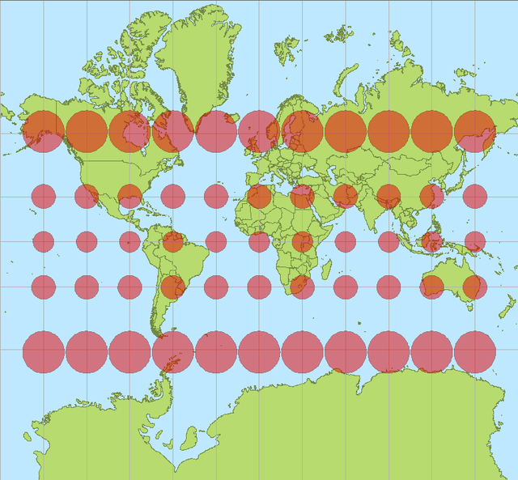
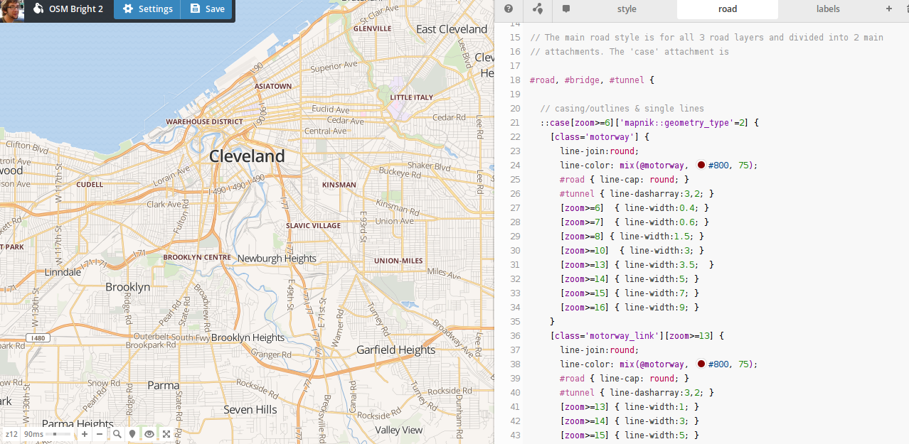

Anatomy of a Web Map
By
Alan
Beth (@maptimesf), lyzi, Andy W, Adapted by Will
Housekeeping!
You can follow along here:
sta.mn/qhg. Links are in blue boxes,
green is just emphasis. You can comment and edit on
github!Today we will be talking about the very most basic principles of web mapping.
We're including a little history, so you can get an idea of how web maps have come to be.
So, What is a web map?
How is a web map different than a digital map?
Digital: involves a computer, but might not be accessible by the internet.
A web map is a kind of digital map. And both are obviously quite different from analog maps, such as paper maps and atlases!
web map (aka: slippy map) require internet * [usually] interactive, * multiple zoom levels!
 OpenStreetMap.org
OpenStreetMap.org maps.stamen.com
maps.stamen.comok ok
but how about a little history:
How did web maps come to be?

First, there were digital maps like
ArcGIS.

In 1996, Mapquest launched its web service.
Directions! Online! Revolutionary!
The problem: it was slow to load :(
Google Maps really paved the way for online mapping, beginning in 2005.
But what was the revolution?
Was it the interface?
The red marker?
The weather widget?
Because it was google?
No!
It was the
tile! 
tiles
=
256x256 pixels
same boundaries
~20 zoom levels
not interactive
Each zoom level has its own set of tiles!
 Zoom level 0: one tile for the world.
Zoom level 0: one tile for the world.With each additional zoom level, the number of tiles increases exponentially.
 Zoom level 1: 4 tiles for the world.
Zoom level 1: 4 tiles for the world. Number of tiles at zoom level z:
2z x 2z = 4z
Tiles are rendered in advance (usually) then stored in a cache
Map tiles are just images on the web, so you can link to them individually.
In order to understand how this works, let's break down the URL.
http://tile.openstreetmap.org/4/2/6.png -- this is the name of the tile server.
http://tile.openstreetmap.org/4/2/6.png -- this is the z value, or the zoom level.
http://tile.openstreetmap.org/4/2/6.png -- This is the x/y value, or the place in the grid where the tile lives.
Web maps use Mercator projection, which is designed for sailors BUT....
by: Stefan Kühn
but it's equidistant at local, small levels

ZOOM LEVEL ≠ SCALE
a web map
is (usually) not just tiles!
When we add points or lines on top of the base layer, we call those feature layers
Sometimes you can interact with them (clicking to produce a popup, for example).
Here's the breakdown of how these pieces fit together:

(edited within leaflet or your web mapping framework, cartodb)
Now we're ready to dive a little deeper into the whole web map anatomy!
What does the javascript library do? Grabs the tiles, adds the base layer (already styled), handles interaction, customizes look of feature layer
Filetypes: GIS uses
shapefiles, but web maps prefer
KML, or more recently,
GeoJSONThe javascript: we recommend
Leaflet, although there are others:
OpenLayers (which is making a comeback) /
Now, it's time to make your own web map (Base map and layers!)
No CODING required
mapbox.com
3 exceptions to the simplified story!
Exception #1: Tiles are always rasters EXCEPT when they're not!
vector tiles: they are an alternative to a database that makes raster tiles. They still render to rasters for display
So someone has to go through and chop up that data, like
MapBoxException #2: Can’t interact with features on a raster. BUT
UTFGrid (Mapbox invention) makes it possible.

UTFGrid is an invisble tile layer made up of arbitrary letters which are indexes into the clickable data
Exception #3:
D3 exists outside the world of tiles
you can’t easily make road map in D3 BUT can do things that are clumsy in slippy maps like...

different map projections (in the browser!)
sta.mn/jfs
IS

IN

SANE
Very powerful, but steep learning curve
So.
Where do I start?
Do I need to make my own custom tiles?
Yes? Use
TileMill to design your own tiles.
 Pretty!
Pretty!Style your map with
CartoCSS (or just carto)
You can host these files on
MapBox, or...
Do I need a content layer?
No? Put all your data into the tiles, possibly using UTFGrid for interactivity
Yes? Convert a Shapefile to GeoJSON with
OGRE or write your own GeoJSON with
geojson.ioFinally,
CartoDB takes care of almost all of this for you!
Thanks to:
You!
Presentation made with
big


 vector tiles! What are they? (unrelated demo)
vector tiles! What are they? (unrelated demo) Stamen used this technique on the Parks Conservancy map.
Stamen used this technique on the Parks Conservancy map. choropleth maps or... sta.mn/jyx
choropleth maps or... sta.mn/jyx cartograms or... sta.mn/q99
cartograms or... sta.mn/q99 More:
More:{kind=link}